Team Roster
Members
Meet the Periwinkle members, their roles, bases, and character slots.
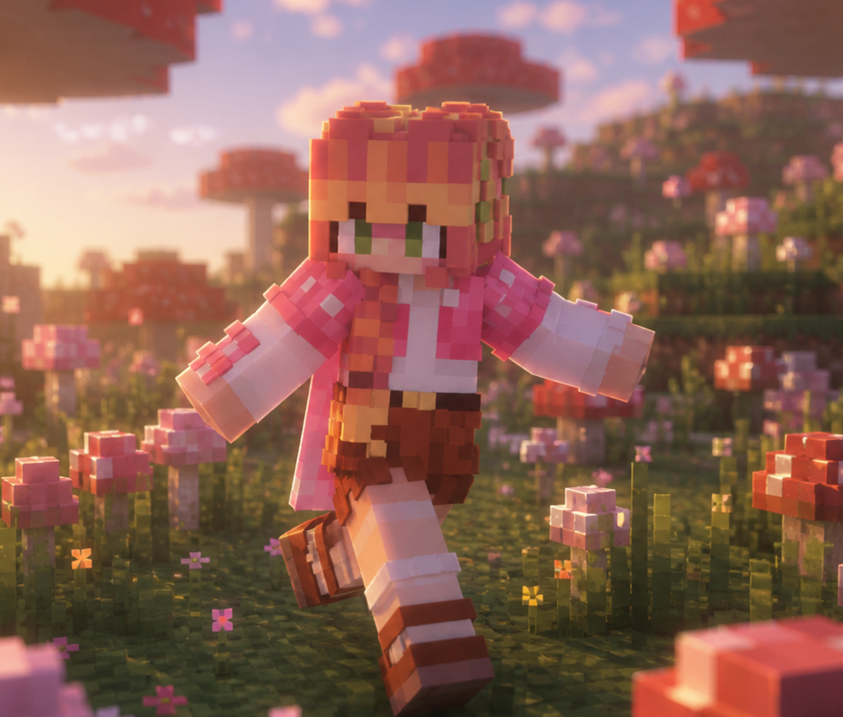
Iorii
Leader
IGN: itsyuureii
SMP Role: KDos Admin | Winkle Leader
Team Role: Team Leader | Gatherer | Helper |
Builder | Explorer
Base: Whitdane's Island
Specialty: Building and farming, with a focus on
creating aesthetic, functional, and well-organized spaces that
balance creativity, efficiency, and survival progression.
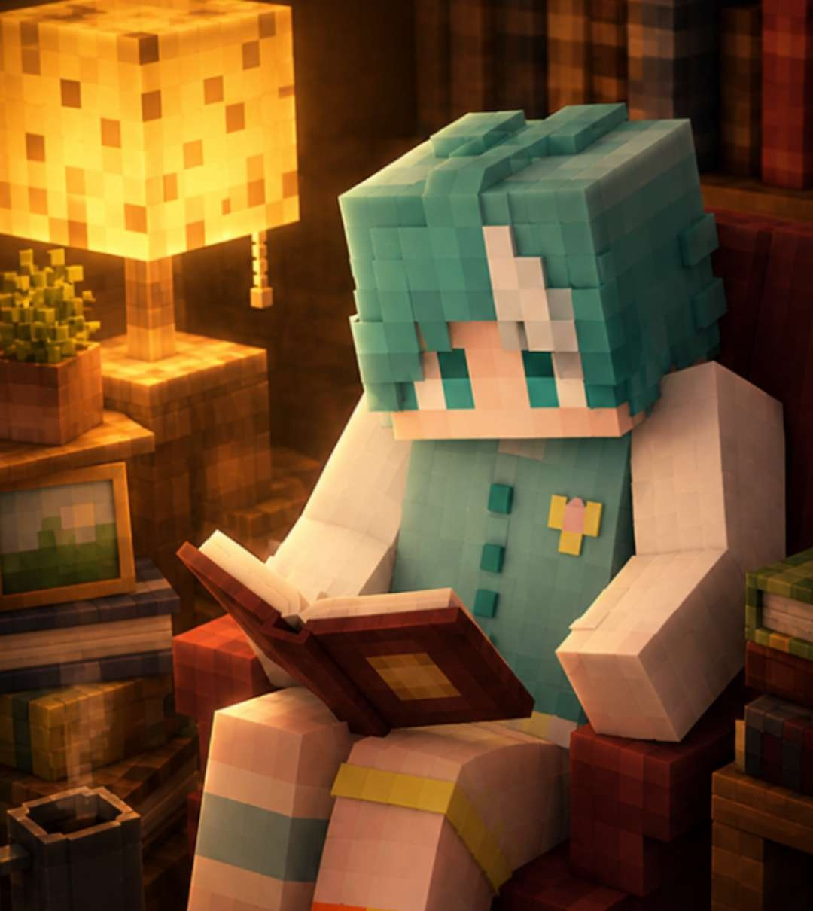
Aish
Co-Leader
IGN: aishertz_
SMP Role: KDos Builder | Winkle Co-Leader
Team Role: Team Co-Leader | Builder | Redstoner |
Decorator | Developer
Base: Lyessana Island
Specialty: Flexible thematic builds spanning
medieval, modern, steampunk, and fantasy styles, with cohesive
paths, structures, and unified team aesthetics.
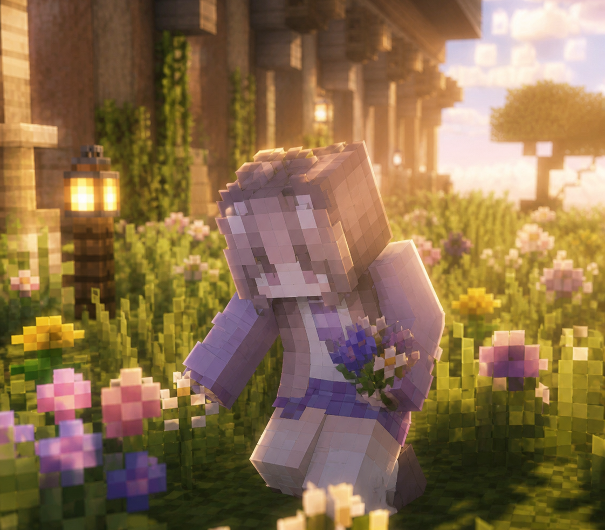
Anaya
Member
IGN: primallie
SMP Role: KDos Discord Booster
Team Role: Builder | Gatherer | Helper | Explorer |
Decorator
Base: Lyessana Island
Specialty: Building with a strong focus on medieval
and fantasy-inspired styles, while remaining flexible with different
themes and aesthetics.
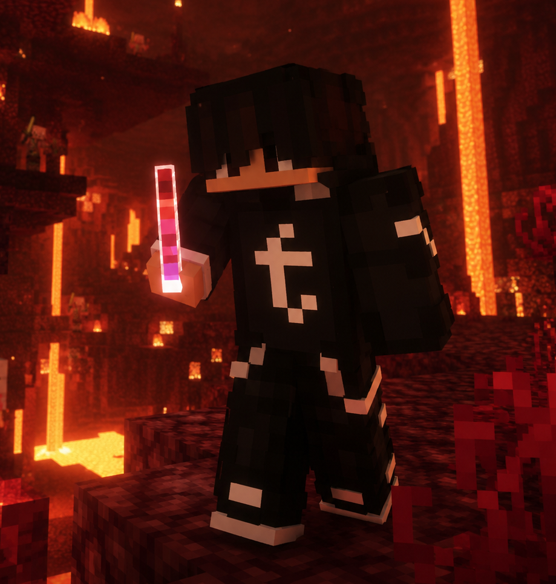
Stanly
Member
IGN: stanly
SMP Role: KDos Trial Staff
Team Role: Gatherer | Buidler| Helper
Base: Mossbrook Island
Specialty: Medieval and fantasy-inspired builds
alongside farming, focused on creating immersive environments that
balance aesthetics, functionality, and sustainability for both
survival and community spaces.
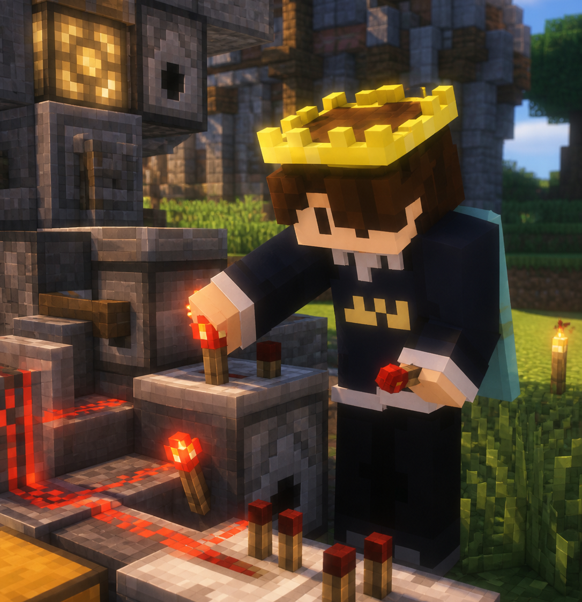
Zan
Member
IGN: ZanIsHere
SMP Role: KDos - Winkle Member
Team Role: Gatherer | Explorer | Redstoner |
Builder | Protector
Base: Oakendale
Specialty: Skilled in PvP combat, Redstone
engineering, and efficient material gathering. Adaptable in handling
both technical and survival-based tasks, from creating functional
Redstone systems to collecting resources needed for large-scale
projects and team progression.
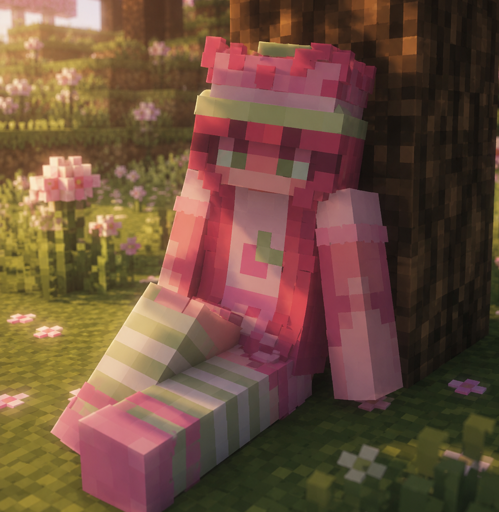
Yushi
Member
IGN: Yushii20
SMP Role: KDos Donator
Team Role: Builder | Helper
Base: Peonica Island
Specialty: Cottagecore, medieval, and fairy-themed
builds centered around cozy atmospheres, detailed architecture,
whimsical landscapes, and fantasy-inspired aesthetics.
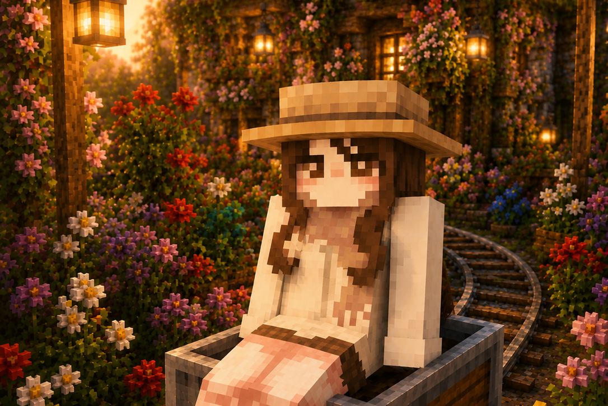
Ishi
Member
IGN: iishiie
SMP Role: KDos - Winkle Member
Team Role: Builder | Farmer
Base: Fairly Island
Specialty: Cottagecore, and fairy-themed builds
centered around cozy atmospheres, detailed architecture, whimsical
landscapes, and fantasy-inspired aesthetics.
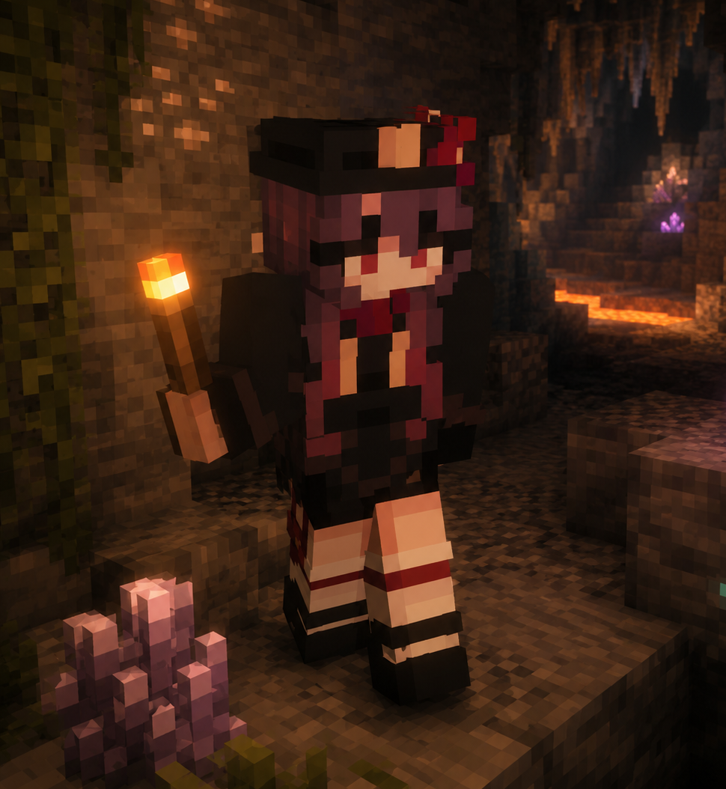
Yahoo
Member
IGN: yahooxx5496
SMP Role: KDos - Winkle Member
Team Role: Explorer | Farmer | Miner
Base: Mizumori Island
Specialty: Mining and building, focused on
gathering valuable resources and creating functional yet visually
appealing structures for survival and community projects.
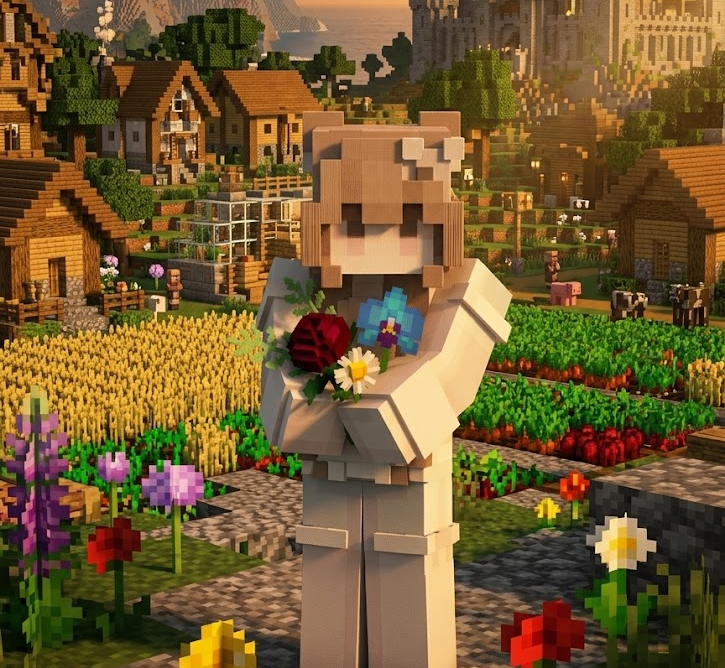
Bunny
Member
IGN: bunnxyx
SMP Role: KDos Trial Staff | Donator | Media
Team Role: Explorer | Gatherer
Base: Moondoll Island
Specialty: Exploring different areas, gathering
resources, and building cute, cozy houses with a soft
fantasy-inspired style, focused on creating peaceful and aesthetic
spaces for survival and community living.
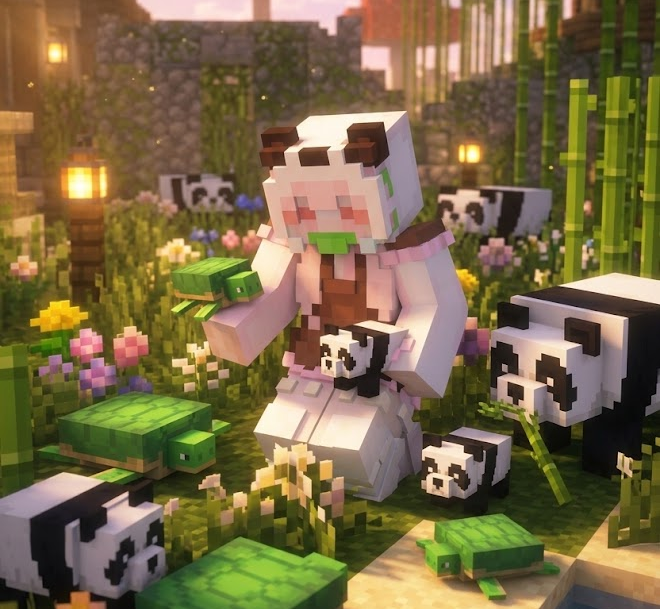
Copi
Member
IGN: copiie
SMP Role: KDos SMP Donator II | Media
Team Role: Explorer | Miner
Base: Pixie Dust
Specialty: Gathering and caring for pets, focused
on collecting rare, cute, and useful companions while supporting the
community with exploration and resource gathering.
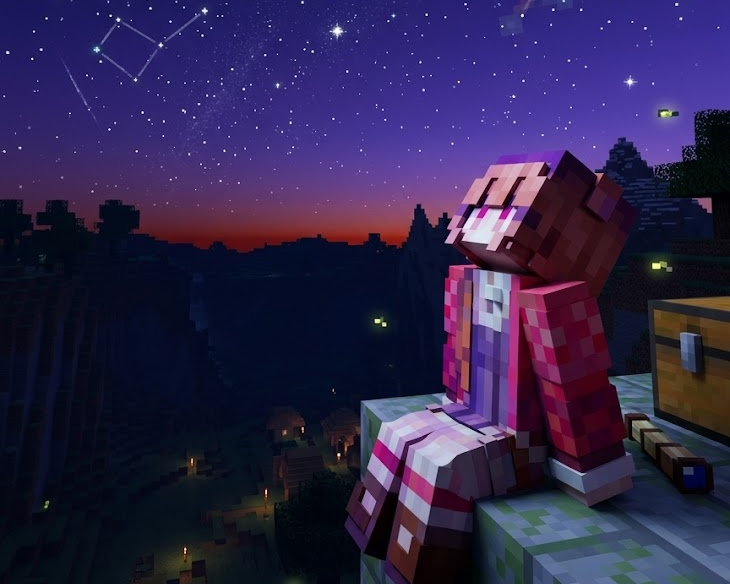
Phia
Member
IGN: phia_imnida
SMP Role: KDos Donator | Media
Team Role: Builder | Farmer
Base: Piaya
Specialty: Building houses and helping with
projects or designs whenever needed, always willing to lend a hand
for free and support the community however possible.
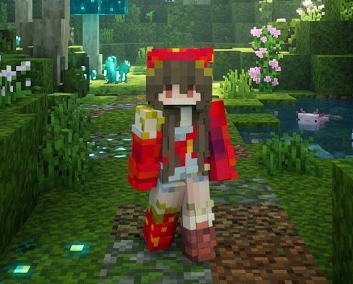
Selen
Member
IGN: soulacea7754
SMP Role: KDos - Winkle Member
Team Role: Farmer | Helper | Gatherer | Potion Maker
Base: Faelight
Specialty: Gathering resources, brewing potions,
and creating cozy cottagecore-inspired builds focused on cute,
aesthetic, and immersive fantasy-style environments.
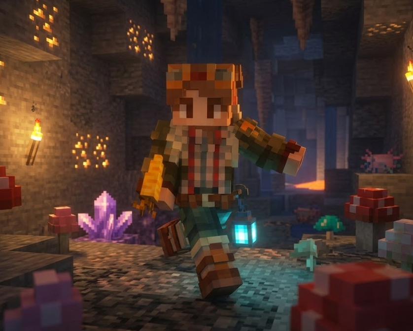
Micro
Member
IGN: Microlicious
SMP Role: KDos - Winkle Member
Team Role: Helper | Gatherer | Miner
Base: Dark Fantasy
Specialty: Always willing to help others with
building, planning, and general support whenever needed, offering
assistance freely and consistently to contribute to community
projects and ideas.